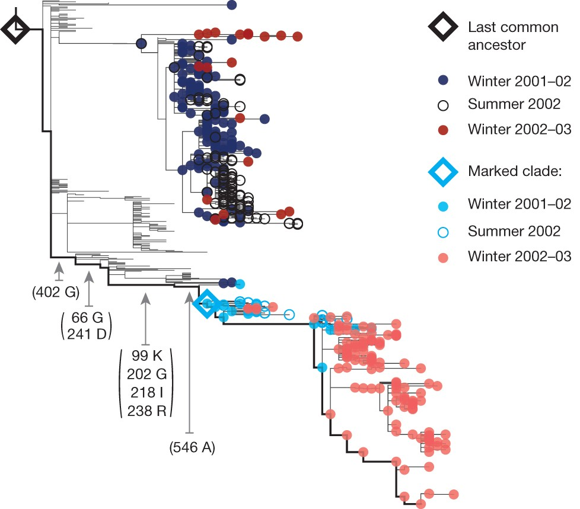
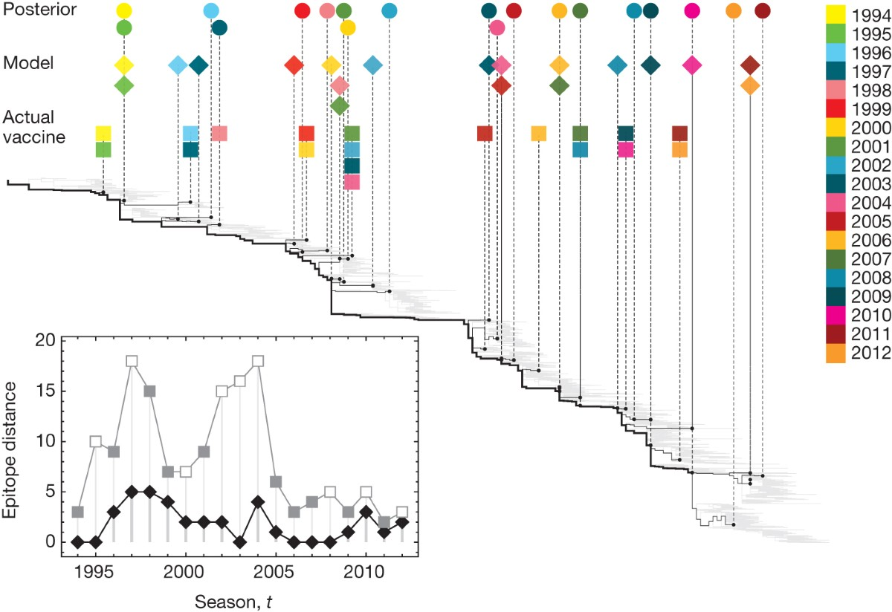

Every February, an expert advisory panel convenes at the World Health Organization (WHO) headquarters in Geneva, Switzerland. Their assignment is urgent and high-stakes: select the specific viral strains to include in the upcoming Northern Hemisphere seasonal influenza vaccine.
This meeting occurs nine months before the winter flu season begins in November. Why does public health operate under such an extreme time lag? Traditional influenza vaccines are manufactured inside embryonated chicken eggs or bioreactor culture systems. Growing hundreds of millions of vaccine doses, purifying viral antigens, conducting sterility assays, packaging vials, and distributing shipments to pharmacies across North America takes between six and nine months.
The Evolutionary Dilemma: Influenza A (H3N2) is an RNA virus with a high mutation rate. During those nine manufacturing months, circulating viral populations do not stand still. They accumulate mutations, explore genetic space, and undergo relentless immune selection from host antibodies.
Historically, vaccine committees relied primarily on observed viral frequency—selecting whichever clade was most common in global surveillance samples during January and February.
This strategy repeatedly failed. A viral strain that is abundant in February is often near the end of its evolutionary lifespan. Because human herd immunity has already adapted to it, its reproductive number drops. Meanwhile, a rare, newly emerging variant carrying novel escape mutations can expand from 2% frequency in February to 90% dominance by November. When the vaccine strain mismatches the circulating virus, vaccine effectiveness drops from ~60% to near zero, causing tens of thousands of excess hospitalizations.
In 2014, computational biophysicists Marta Łuksza and Michael Lässig published a breakthrough framework in Nature demonstrating that public health does not have to guess blindly. By modeling the opposing evolutionary forces of adaptive immune escape and biophysical protein stability, they built a mathematical fitness model that forecasts which influenza clade will dominate up to one full year into the future.
To understand why viruses evolve in predictable ways, we must examine the biophysical anatomy of the primary viral surface protein: Hemagglutinin (HA).
Hemagglutinin is a trimeric glycoprotein embedded in the viral lipid membrane. It serves two biological functions:
Because hemagglutinin is prominently displayed on the exterior of the virion, it is the primary target of neutralizing antibodies produced by the human immune system.
Łuksza and Lässig partitioned the 329 amino acids of the HA1 subunit into two distinct functional categories:
| Structural Domain | Anatomical Location | Evolutionary Selection Regime |
|---|---|---|
| Epitope Sites ($N_b$) ~130 Residues |
Surface-exposed loops on the globular head domain (designated epitopes A, B, C, D, and E) surrounding the receptor-binding cleft. | Positive Darwinian Selection: Amino acid substitutions here alter surface charge and topography, preventing previously formed host antibodies from binding. Each epitope mutation provides an antigenic novelty bonus. |
| Non-Epitope Sites ($N_d$) ~199 Residues |
The internal structural core of the head domain and the entire stem (HA2) fusion machinery. | Purifying (Negative) Selection: Mutations in these conserved structural positions destabilize the trimer, disrupt the fusion mechanism, or impair folding. Most mutations here incur a deleterious fitness penalty. |
Łuksza and Lässig formalized this biological trade-off into a quantitative fitness function. They modeled the Wrightian fitness $f(c)$ of any circulating viral clade $c$ as an additive combination of positive and negative selective forces:
In population genetics, a strain's frequency in the next generation depends on its current abundance and its reproductive growth rate. Using standard Fisher-Wright selection dynamics, the predicted frequency $\hat{X}_c(t + \Delta t)$ of clade $c$ one year into the future ($\Delta t = 1 \text{ year}$) is given by:
The Decisive Insight: A lineage with low initial frequency ($X_c(t) = 0.05$) but high net fitness ($f(c) \gg 0$, driven by multiple epitope mutations and zero deleterious mutations) will out-reproduce competitors and surge in frequency. Conversely, a clade that currently dominates ($X_c(t) = 0.60$) but carries an unfavorable mutational load ($f(c) < 0$) is destined to collapse.
To illustrate how positive and purifying selection sculpt the influenza phylogenetic tree over a single 12-month period, Łuksza and Lässig tracked the global evolution of H3N2 between Winter 2001–02 and Winter 2002–03:

The master validation of the Łuksza-Lässig framework is presented in Figure 3. The authors conducted a retrospective backtesting audit across 17 consecutive flu seasons (1994 to 2012), benchmarking their computational model against both empirical reality and the actual vaccine choices made by the WHO panel:

1. The Model Faithfully Tracks the Evolutionary Trunk:
In the main tree, the solid black line marks the evolutionary trunk—the single uninterrupted lineage that survives year after year, giving rise to all future influenza epidemics. Notice that the Model diamonds match the Posterior circles almost perfectly along the trunk. In contrast, the Actual Vaccine squares frequently sit out on short-lived side branches that branched off years earlier.
2. The Disastrous Mismatch Spikes (The Inset Graph):
The bottom-left inset quantifies the Epitope Distance—the number of amino acid differences in antigenic sites between the selected vaccine and the actual virus population circulating one year later:
3. The Overall Scorecard: 11 Out of 17 Seasons:
In 11 of the 17 surveyed flu seasons, the strain picked by the computational fitness algorithm was antigenically closer to the future population than the actual vaccine selected by the international panel of human experts. In the remaining 6 seasons, both the model and the committee performed comparably.
To place the Łuksza-Lässig model in modern clinical context, we must distinguish between the two primary modes of influenza genome evolution:
| Feature | Antigenic Drift (Continuous Evolution) | Antigenic Shift (Catastrophic Emergence) |
|---|---|---|
| Mechanism | Gradual accumulation of point mutations in HA and NA during RNA replication due to error-prone RdRp activity. | Sudden genetic reassortment: exchange of entire RNA segments when two distinct viral subtypes coinfect an animal host (e.g., swine or avian species). |
| Population Impact | Drives annual seasonal epidemics; requires periodic updates to the seasonal flu vaccine. | Introduces a completely novel HA subtype into a non-immune human population, triggering global pandemics (e.g., 1918 H1N1, 1957 H2N2, 1968 H3N2, 2009 H1N1). |
| Model Applicability | Directly modeled by Łuksza & Lässig: forecasts gradual frequency shifts among circulating clades within a subtype. | Cannot be predicted by continuous fitness models: shifts represent discrete, non-linear spillover events requiring syndromic one-health surveillance. |
The principles established by Łuksza and Lässig directly inspired the modern architecture of real-time viral surveillance. In 2015, computational biologists Trevor Bedford and Richard Neher extended this framework to create Nextstrain (originally launched as nextflu).
Today, Nextstrain continuously ingests thousands of viral genomes deposited into the GISAID public repository. It automatically reconstructs phylogenetic trees, estimates molecular clock rates, computes clade growth trajectories, and visualizes epitope mutations on interactive 3D protein structures. This computational infrastructure now directly informs the WHO vaccine selection committee twice each year, proving how abstract evolutionary equations translate into lifesaving clinical countermeasures.
The Lecture 7 Pre-Class Reading Quiz opens on Canvas on Thursday, October 8, 2026, at 00:00 (Midnight) and closes at 20:00 (8:00 PM EDT).
Similar to Lecture 6, Question 1 (2.0 Points — Mandatory Proof-of-Work Upload) requires you to download the master vaccine selection diagram from Łuksza & Lässig (Figure 3), perform a guided visual analysis, and upload your personalized annotated diagram with your verified student watermark. Submissions without the handwritten or digitally typed watermark will receive zero credit.
"The Persistent Trunk Line".f(c) = c_b • ΔN_b - c_d • ΔN_d and write 1 sentence explaining why the model penalizes non-epitope mutations ($\Delta N_d$) (destabilizes trimer folding / biophysical fitness penalty).[Your Name] • [AccessNet ID] • [Date].Questions 2–5 (1.0 Point each): Cover the 9-month WHO manufacturing lag time, epitope versus non-epitope selection coefficients ($c_b$ vs. $c_d$), why frequency does not equal fitness, and the evolutionary distinction between antigenic drift and antigenic shift.